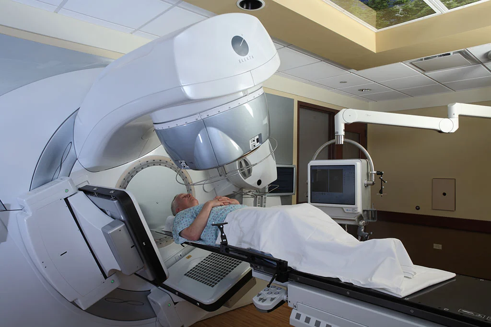
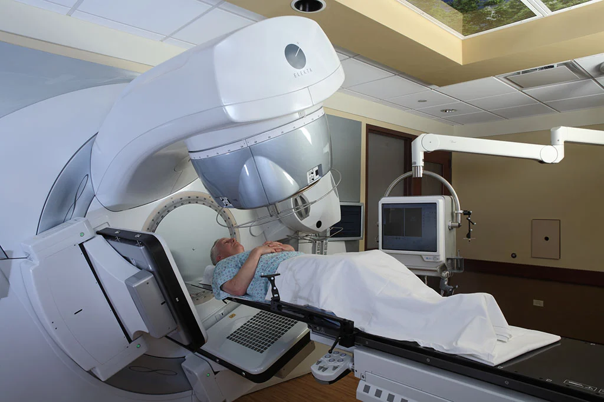

La mayoría de los cánceres de próstata se detecta primero al hacer la prueba de sangre para detectar el antígeno prostático específico (PSA) o mediante el tacto rectal (DRE). Por lo general, los cánceres de próstata en etapas iniciales no causan síntomas, en cambio los cánceres más avanzados se pueden detectar debido a los síntomas que causan.
El diagnóstico del cáncer de próstata implica varias etapas, y los métodos utilizados pueden variar según la situación clínica de cada individuo. Aquí hay un resumen general de cómo se diagnostica el cáncer de próstata:


Antígeno Prostático Específico (PSA): Un análisis de sangre que mide los niveles de PSA, una proteína producida por la próstata. Niveles elevados pueden indicar problemas, pero no son concluyentes para el cáncer. Examen Rectal Digital (ERD): Un examen físico en el que el médico introduce un dedo lubricado en el recto para evaluar el tamaño, forma y consistencia de la próstata.
Si los resultados de las pruebas de detección son preocupantes, se puede realizar una biopsia de próstata. Durante la biopsia, se extraen pequeñas muestras de tejido prostático con una aguja, generalmente guiada por imágenes de ultrasonido.
Un patólogo examina las muestras de tejido bajo un microscopio para determinar si hay presencia de células cancerosas y, en caso afirmativo, evalúa la agresividad del cáncer.
Si se confirma el cáncer, se realiza un proceso llamado estadificación para determinar la extensión y la gravedad del cáncer. Esto puede incluir estudios de imagen como resonancias magnéticas o tomografías computarizadas.
El tratamiento varia dependiendo el grado en el que este el cáncer. Aquí le presentaremos los grados y sus respectivos tratamientos.
Grupos de bajo riesgo: La mayoría de los hombres cuyos cánceres de próstata se encuentran en el grupo de bajo riesgo y que no presentan ningún otro problema de salud grave se les ofrece la opción de la vigilancia activa debido a que muy poco de los cánceres en este grupo se propagarán a partes del cuerpo distantes. Dependiendo de las preferencias del paciente, otras opciones podrían conformarse por radioterapia (ya sea de rayos externos, o bien, la braquiterapia) o por la Prostatectomía radical. Si los hallazgos tras la cirugía muestran que el cáncer presenta características que lo hacen propenso a regresar, entonces los siguientes tratamientos podrían considerarse:
 

Es importante destacar que el diagnóstico y tratamiento del cáncer de próstata deben ser personalizados según la situación específica de cada paciente. La discusión detallada con un equipo médico es esencial para tomar decisiones informadas sobre el curso de acción más adecuado.